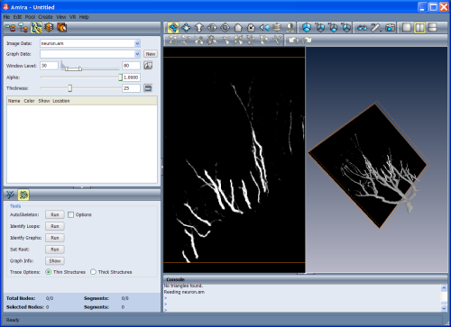
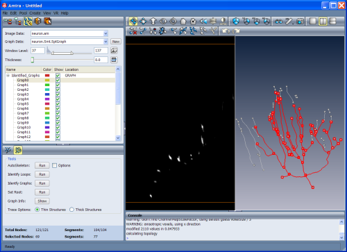
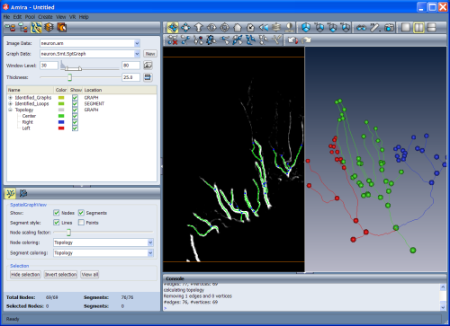

This section provides a step-by-step introduction to the Filament Editor.
To use the Filament Editor a ResolveRT (Microscopy) license is required.
The Filament Editor is a special purpose sub-application in Amira that is
designed to extract complex three-dimensional networks of filamentous structures
from image data and post-process such data by editing and annotating the network
with label scalar data. In this tutorial we want to demonstrate the principles
of the Editor by extracting the dendritic fiber network of an invertebrate
neuron. The data set we will be working with depicts a neuron from the honeybee brain
imaged with a confocal microscope and was kindly provided by Prof. R. Menzel,
Free University of Berlin.
In this section the following topics will be discussed:
- Exploring the volume data.
- Automatic extraction of the network.
- Interactive tracing.
- Labeling and visualizing the network.
To access the Filament Editor, click the icon in the sub-application bar.
We begin our work by loading the 3D image data set.
- Load the file neuron.am located in the data/tutorials/neuron subdirectory.
Once the image data has been loaded, the left-hand panel of the viewer shows a
2D slice of the volume, while the right-hand panel will show the 3D objects.
In order to have a clear idea of how the neuron spreads out in space,
we explore the volume by using slicing, windowing, and rendering the gray
values.
- Window Level Select the Window Level icon, click the 2D viewer,
hold the mouse button pressed, and drag the mouse cursor left/right to
change the window width, or up/down to change the window center.
Set the window level around 30-80. Click the 3D button to visualize the
selected voxels using a shaded volume rendering.
- Browse Slice The browsing tool allows using the mouse to
navigate through an image stack in the 2D viewer (or MPR viewer). Select the Browse Slice
icon, click the 2D viewer, hold the mouse button pressed, and drag the mouse
cursor up/down to scroll forward or backward through the image stack.
If you are working with a wheel mouse you can use the wheel instead of
this icon. Simply click the viewer and scroll the mouse wheel to scroll
through the image stack.
- Thick Slice The thickness of the slice can be set by sliding the
Thickness slider. When displaying a thick slice, data values are
computed as maximum intensity of the values of the original slices. Set
thickness to 25. Click the 3D slice button to visualize the thick slice in the 3D viewer.

Figure 35:
The Filament Editor immediately after the image data has been loaded.
The left-hand panel of the viewer shows a 2D slice of the volume, while the
right-hand panel shows the 3D objects. The 3D and slice rendering have
been activated in the 3D viewer.
In a first step you may want to automatically extract what will serve as a draft
version of the neuron's skeleton. This can be achieved with the Filament Editor's
Auto Skeleton tool.
- Set the Window Level to 37 137.
- Click the 3D button beside the Window Level slider.
The 3D viewer shows a shaded volume rendering of
the neuron's main branches and gives a rough estimate of what the automatic
tracing procedure will consider as part of a neuron.
- Select the Trace tab in the Tool Box and press the Run button of the Autoskeleton port.
After a few seconds you will see green lines and blue points in the 2D viewer.
In the 3D viewer gray spheres are
displayed together with the preview rendering. If you do not see
them, click the icon View All (or the space bar) to center the 3D viewer on them.
- Adjust the Alpha slider, which appeared when you activated the 3D rendering.
You can see the generated graph through the rendering.
The Auto Skeleton tool traces connected regions according to a user-defined
window level and converts the centerline of those regions into graphs
composed of points, segments, and nodes, which are the elements of the data class
SpatialGraph. The result of the "skeletonization" is, therefore, a SpatialGraph object, which is being
visualized in the 3D viewer as balls and lines, and as blue points connected by
green lines in the 2D viewer.
Depending on the quality of the data and on the selected window level the result
of skeletonization will typically show several disconnected elements and
loops within the networks. Disconnected elements will break the single
neuron into several sub-graphs. Loops, on the other hand, are parts of a graph
where segments connect onto itself. In some biological objects like e.g. neurons
loops must not occur. To identify graphs and loops the Filament Editor offers
dedicated tools.
- Press the button Identify Graphs to automatically detect and
label all graphs (all connected components) in the SpatialGraph object.
This creates a new label group in the Label Editor named
Identified_Graphs under which all identified graphs are listed as
Graph0, Graph1, ..., GraphN.
- To visually identify them just click on one of the items in the
Identified_Graphs list. The selected item is highlighted in red in both viewers.
- Under Identified_Graphs select Graph2 and shift-select
Graph25, then remove them by clicking the Delete Selection button.
- Press again the button Identify Graphs, now you should have only two graphs.
- Scale the nodes by moving the Node Scaling Factor slider in the
View tab of the Tool Box (we will see the details in the
next paragraph).
At this point we have only two graphs: Graph0 is the large tree, while
Graph1 is just three segments and four nodes. Switch back to the
Edit tab in the Tool Box.
- Select Graph1 in the Label Editor under Identified_Graphs
- Activate the Select Single icon and Ctrl-click on the closest
node of Graph0 in the 3D viewer.
- Select the Connect Selected icon to connect the graph.
- Press again Identify Graphs. At this point you should have only
one graph.
- Press Identify Loops to get another label group
Identified_Loops.
- Under Identified_Loops select Loop2 and remove it by
clicking the Delete Selection button. Note that a segment is defined
by two nodes. Therefore, when you remove a node the associated segment will
be removed too. Hence the "Identified_Loops" contain the looping
segments, but not the nodes connecting them. However this may produce isolated points
which can be removed by the Delete Selection button.
It should perhaps be noted that the Auto Skeleton tool is also
available as a compute module in the Pool under the Skeleton category. Also,
there is a rich set of tools available in the Segmentation Editor
to perform the threshold segmentation necessary for the skeletonization
process. Finally, in the case of a strict tree topology it may be advantageous
to restrict the search to a tree. In this case you may want to use module
CenterlineTree to extract a graph with guaranteed tree topology.
Before closing this subsection, we should save the SpatialGraph data object
we have created, it will be useful in further step of this tutorial.
- Switch back to the Pool, save the object called neuron.Smt.SptGraph
in a directory of your choice and then remove it from the Pool.
- Switch again to the Filament Editor to prepare the next step.

Figure 36:
The SpatialGraph object obtained with the Auto Skeleton tool.
Note the highlighted main graph.
The Interactive Tracer tool enables you to trace the filaments directly on
the gray values using an innovative tracing algorithm developed by us.
The user sets the starting and ending points of a segment and the
Interactive Tracer finds the shortest line connecting the two points
with respect to the user-defined data window.
Now we can use the Interactive Tracer to re-trace the neuron segments.
In order to clearly understand how to use the tracer, we will try to re-trace
a small part the of the neuron tree we extracted in the previous paragraph.
- Press the New button at the Graph Data port
to create a new SpatialGraph data object.
- Click in the 2D viewer. Using the
Browse Slices tool or the mouse wheel, slice through the volume until
you reach the root of the neuron.
- Set the thickness of the Thick Slice to 10 for a better visualization.
- Activate the Interactive Tracer by clicking the Trace Filament icon in the toolbar
and make sure that the Thick structures option is checked in the Trace tab.
Note that the Interactive Tracer is alway active while the Trace Filament icon
is highlighted and it can be triggered only if the 2D viewer is active.
If you now move the mouse over the 2D slice, the cursor has a cross shape
whenever it is over black regions and turns into a crosshair (cross within
circle) when it is over voxels that are within the window level. The cross-hair
shape indicates that it is possible to set tracing key points. As you will see later, when the
pointer is over a traced segment (green line) a small "P" appears in the
crosshair. This indicates that a click would select the nearest point as a key
point. Likewise, an "N" is shown in the cursor whenever the cursor is over a
node and a click will select this node as a key point. Furthermore, the cursor
turns red when the trace tool is in append mode, meaning that the next
click will trigger a tracing action between the previously selected and the
current key point.
- Start the tracing by clicking on a gray value of the tree root.
- Slice ahead and set further points, until you reach the first bifurcation and click on it.
- Deactivate the Interactive Tracer e.g. by clicking the
Select Single tool or by clicking again its icon.
If you press Identify Graphs, you will see only one graph.
You can also access some statistical information by clicking on the Graph Info
button in the Edit tab. This opens a spreadsheet window
containing a list of all segments in the graph. The spreadsheet is interactive,
i.e. if you click on a line, the corresponding segment will be highlighted in
the viewer.
Repeat the actions to trace the first branching sections from the root.
The SpatialGraph data object is
able not only to store the spatial structure, i.e., the geometry of the
network, but also to associate it with scalar and label data.
Labels can also be used to tag or annotate sub-graphs according to their
topology. In this simple example we want to tag the three main branches of the
Topology as Central, Left, and Right of a neuron tree.
If you already extracted the graph as described in the second subsection you should
now load the file you previously saved, otherwise you should go two steps back
and read the subsection "Automatic extraction of the dendritic tree".
- Right-click into the Label Editor and select
Add graph label group.
- Right-click on the created label and rename it Topology.
- Right-click on the Topology label and select Add label.
Repeat this action to add three labels.
- Select and right-click on each of the created labels and rename them
Central, Right, and Left.
- Select the Select Lasso icon and select-lasso the right-hand
branch. You can use the Select Lasso tool in combination with
Shift key to deselect-lasso or with the Ctrl key to add
elements.
- Right-click on label Right and select Assign selection.
Repeat the last two items to label Central and
Left branches. Note that this is just an exercise, it does not really
matter to exactly select the "Center", "Right" or "Left" segments.
Select now the View tab in the Tool Box
- Scale the nodes using the Scaling Factor slider.
- Colorize the nodes according to the label by selecting Topology in
Node Coloring.
- Repeat the last item for the segments.
- Click on the color button of label Right and select a new color.
For advanced network visualization you can switch to the Pool. If
you do so, you may attach a SpatialGraphView module
to the SpatialGraph object we created before.

Figure 37:
The visualization of the SpatialGraph obtained with the
AutoSkeleton and Tracing tools.
From the Filament Editor just switch to the Segmentation Editor by
clicking the icon in the Sub-application Tool Bar. For an
in-depth treatment of the Segmentation Editor we refer you to its documentation
and tutorial. For this simple example you may try the following simple steps.
- Create a new label field by pressing the New button in the
Label Data port located in the upper part of the user-interface.
- Create a new material by pressing the New button in the
Materials port.
- Right-click the new material in the Material List, select
Rename Material and enter "neuron".
- In the area Display and Masking area set the threshold to 100-255
- In the tool box at the bottom part of the user-interface, select the
Threshold tool and click the Select button.
- in the Selection box click the "+" button to assign the selected
region to material "neuron".
- Switch back to the Filament Editor and select neuron.Labels from
the Image Data pull-down menu. Now skeletonize the
label field by pressing the Run button in the Auto Skeleton tool.
{kind=link}
{kind=link}
{kind=link}